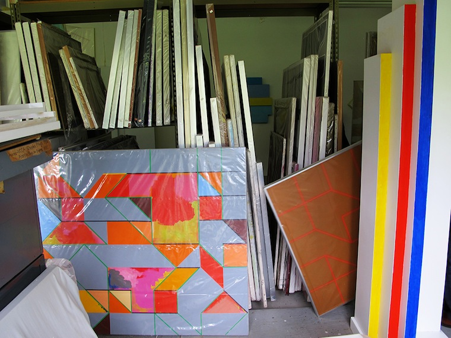

RUBELLO, DAVID.
Painter, sculptor, photographer, teacher, student, writer, poet. Student of art history.

Born in Detroit in 1935. Lives with his wife, the photographer and painter Mary Keithan, in Ray Township, MI and Palm Coast, FL.
Graduated from Cass Tech High School in 1954 as an art major. ("I always wanted to be an artist.")
Studied drawing and painting at the school of the Arts and Crafts Society of Detroit, 1951-1955. Bachelor of Fine Arts from the Academy of Fine Art in Rome, 1961. Certificate of Attendance from the Royal Academy of Fine Arts in Copenhagen, 1966. Master of Fine Arts from the University of Michigan in Ann Arbor, 1972.
Clay modeler for General Motors, 1957-1959, 1961-1963, and 1984-2001.

Taught at the University of Michigan (1970-1972, 1986-1989), Genesse Community College (1972-1973), Penn State (1974-1980), Towson State University (1980-1981), and the College for Creative Studies (1997-1998).
He paints every day.